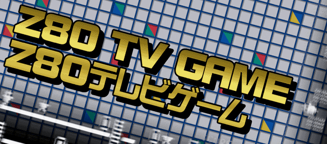
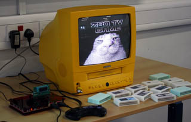
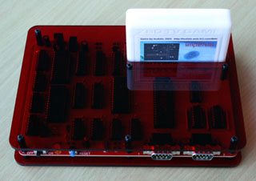
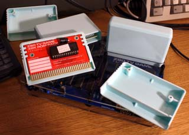
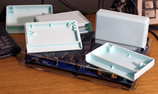
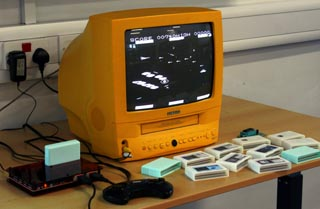
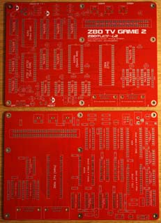
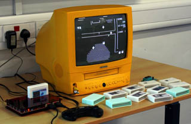
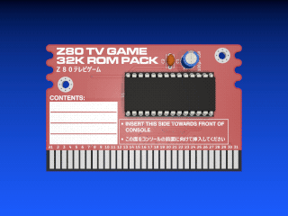
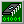

Their PCBs have proven to be very good quality, and are capable of sustaining higher temperatures than the PCB stock used by default by most fabricators. This is especially useful if you're new to soldering! I was also impressed with their selection of customization options; they have a lot more options for solder mask and silkscreen colors compared to many other fabricators.
If you want to build your own Z80 TV Game 2, the ordering process is easy: Just download the Gerber files available further down this page and upload them to PCBWay using their "Upload Gerber Files" utility. The default settings are suitable for most projects, but you can customize the color of the PCBs if you wish.

This updated version of Mr. Isizu's original homemade 8-bit console from 1987 adds a second controller port, allowing multiplayer games to be written for the system! It retains full backwards compatibility with the original Z80 TV Game, and multiplayer games for the Z80 TV Game 2 will be playable on the original Z80 TV Game if they have a single player mode.The Z80 TV Game is an intriguing console, combining video hardware reminiscent of 1970's consoles like the RCA Studio II with more memory than later 8-bit systems such as the NES, Game Boy and Atari 7800.
It can be built with a minimal number of components, and the only out-of-production part in the entire Z80 TV Game 2 is the Z80 CPU itself.
The system's specifications are as follows:

The circuitry of the Z80 TV Game is relatively easy to understand, making it a good resource for learning how a computer generates a video signal.The I/O circuitry of the original Z80 TV Game has been replaced by a cheaper 74LS-based solution. Not only does this lower the cost of components, it also frees up an I/O port for a second controller!
The controller interface is designed for two-button Sega Master System controllers and will also work with Mega Drive/Genesis controllers. Standard one-button joysticks will also work, aside from the lack of a second button.
The composite sync signal is generated with an EPROM, an unconventional method of simplifying the circuitry. Different ROMs have different data access times, so you may need to experiment with one or two models of ROM before you'll find one that produces a glitchless video signal, due to the high speed at which the raster generator steps through the ROM's address bus.
Fortunately, any size of ROM between 4KB (2732) and 64KB (27512) can be used, so long as the 4KB binary data file (available for download further down this page) is written to the upper 4KB of higher capacity ROMs. During testing, I found that a 150ns ROM worked well, while a 450ns ROM was too slow.
If the prospect of making a lot of cartridges doesn't appeal to you, I've designed a multi-cartridge that holds sixteen 32KB games on one 27C040 ROM. Game selection on the multi-cartridge is performed with DIP switches.
The maximum file size for games is 32KB, but I've designed an experimental bank-switching cartridge PCB (not tested yet!) that should allow games of up to 256KB to be accessed through two configurable 16KB page registers on the cartridge.

The memory map of the Z80 TV Game and Z80 TV Game 2 is as follows:

There's a selection of tools available for programming the Z80 TV Game in C:
I've also designed enclosures for the Z80 TV Game's cartridges that can be 3D printed and assembled with M3 x 8 self-tapping screws. I sent the production files to PCBWay for production, and I was very happy with the results! They offer a wide range of filament colors, so you have a lot of options for what your cartridges look like.

Interactive Bill of Materials - Console
Schematic - Console
PDF document, 951 KB
PCB Gerbers - Console
ZIP archive, 739 KB
KiCad Files - Console
ZIP archive, 1.36 MB - Useful if you want to make modifications to the PCB. Made with KiCad 9.

HTML document, 338 KB
Schematic - 32KB ROM Cartridge
PDF document, 127 KB
PCB Gerbers - 32KB ROM Cartridge
ZIP archive, 170 KB
KiCad Files - 32KB ROM Cartridge
ZIP archive, 532 KB - Useful if you want to make modifications to the PCB. Made with KiCad 9.
Interactive Bill of Materials - 32KB x 16 Multi-Cartridge
HTML document, 350 KB
Schematic - 32KB x 16 Multi-Cartridge
PDF document, 151 KB

ZIP archive, 191 KB
KiCad Files - 32KB x 16 Multi-Cartridge
ZIP archive, 564 KB - Useful if you want to make modifications to the PCB. Made with KiCad 9.
Interactive Bill of Materials - 32KB Developer's Cartridge
HTML document, 340 KB - This cartridge is designed to accommodate a ZIF socket for easy prototyping. Made for use with 3M 'Textool' sockets (and clones), but it should work with other sockets too.
Schematic - 32KB Developer's Cartridge
PDF document, 128 KB - This cartridge is designed to accommodate a ZIF socket for easy prototyping. Made for use with 3M 'Textool' sockets (and clones), but it should work with other sockets too.

ZIP archive, 198 KB - This cartridge is designed to accommodate a ZIF socket for easy prototyping. Made for use with 3M 'Textool' sockets (and clones), but it should work with other sockets too.
KiCad Files - 32KB Developer's Cartridge
ZIP archive, 543 KB - Useful if you want to make modifications to the PCB. Made with KiCad 9.
Interactive Bill of Materials - Experimental 256KB ROM Cartridge
HTML document, 316 KB
Schematic - Experimental 256KB ROM Cartridge
PDF document, 221 KB
PCB Gerbers - Experimental 256KB ROM Cartridge
ZIP archive, 209 KB - Please note that the 256KB cartridge hasn't yet been tested!
KiCad Files - Experimental 256KB ROM Cartridge
ZIP archive, 603 KB - Useful if you want to make modifications to the PCB. Made with KiCad 9.
Custom Fonts
ZIP archive, 8.90 MB - Custom fonts used for the KiCad files and cartridge labels. Only needed if you want to modify these files.

ZIP archive, 1.26 MB - All the games I know to exist for the Z80 TV Game thus far. Includes two combined ROMs for those who would rather have all 31 games (and some example programs I've written) on 2 multi-cartridges. If you know of any games that aren't mentioned on this page (or you've written a new game), please let me know! My email address is on the home page.
32KB Cartridge Dimensions
PDF document, 61.3 KB - Useful for designing a 3D printed cartridge enclosure. Note that the standard PCB thickness used by most manufacturers is 1.6mm.
32KB x 16 Multi-Cartridge Dimensions
PDF document, 67.1 KB - Useful for designing a 3D printed cartridge enclosure. Note that the standard PCB thickness used by most manufacturers is 1.6mm.
Console Cover Dimensions
ZIP archive, 827 KB - Dimensions for top and bottom covers for the console, to be mounted with M3 screws and standoffs. Many local companies are able to cut out acrylic sheets based on these measurements for a fairly affordable price. Note that on the top cover, there are two extra screwholes in front of the cartridge slot to improve overall stability. The standoffs that go through these holes sit on top of the PCB, instead of aligning with screwholes on the PCB like the other holes. Nylon standoffs must be used in these two holes to prevent damage to the PCB.
3D Printable Cartridge Shells
ZIP archive, 160 KB - Enclosures for the console's cartridges in STL format.
Cartridge Labels (Pack 1)
ZIP archive, 22.4 MB - Labels for some of the games made by Inufuto.
Cartridge Labels (Pack 2)
ZIP archive, 13.0 MB - Labels for some more of the games made by Inufuto, and a template for making your own labels.
Z80 TV Game Logo (1920 x 846) (Variant 1)
PNG image, 1.21 MB - The logo seen at the top of the page in full resolution.
Z80 TV Game Logo (1920 x 846) (Variant 2)
PNG image, 1.08 MB - The logo seen at the top of the page in full resolution.
Oliver Scholz, who had the idea of replacing the original Z80 TV Game's I/O circuitry with 74LS logic.
Inufuto: Developer of Cate, a multi-platform compiler that can generate software for the Z80 TV Game.
All the games he has created with it thus far have Z80 TV Game versions.
Inufuto has also designed a PCB version of the Z80 TV Game that outputs VGA video via a Raspberry Pi Pico.
Takeda Toshiya: Developer of eZ80TVGAME, a Z80 TV Game emulator for Windows.
lsluk: Developer of vdmgr, a multi-platform emulator for Windows that supports the Z80 TV Game.
RobertK: Developer of several games for the Z80 TV Game.
Last updated on Apr 17, 2026.
This page was first uploaded on Apr 17, 2026.
visitors since Dec 26, 2025.
{kind=link}
{kind=link}
{kind=link}
{kind=link}
{kind=link}
{kind=link}